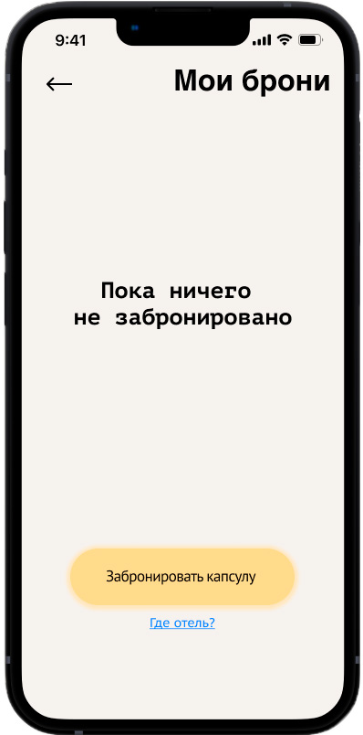
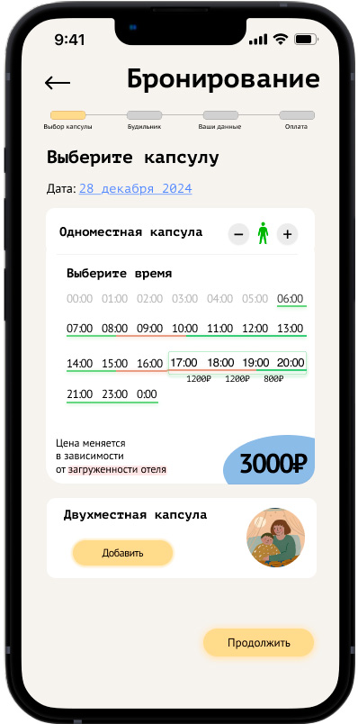
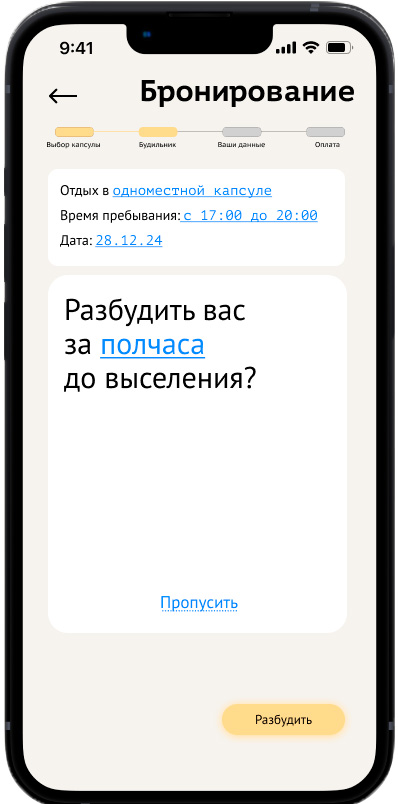
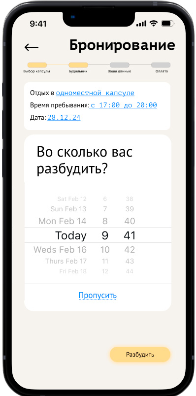
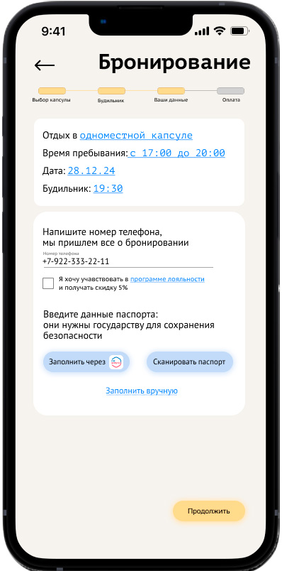
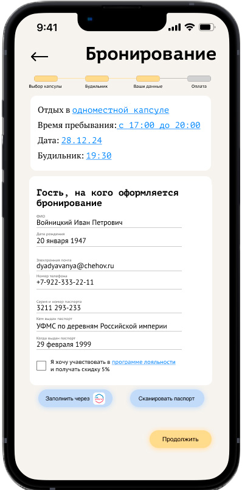
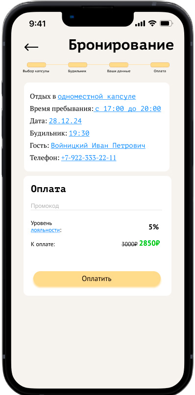
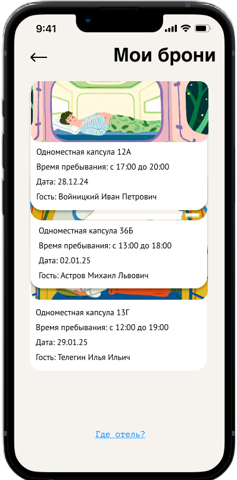
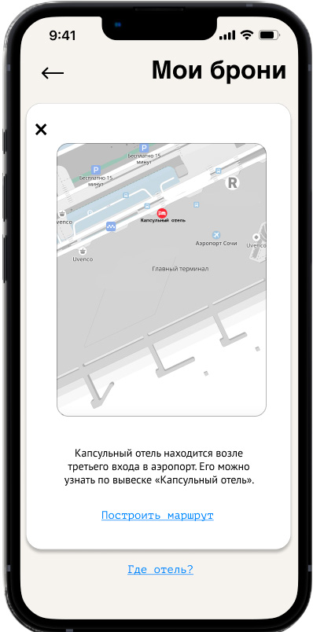

Бронирование капсульного отеля
Задание в школе Бюро Горбунова: интерфейс брони капсулы в отеле при аэропорте. Гость уставший и спешит, поэтому бронь должна проходиться быстро, а будильник — не дать проспать рейс.
Приложение, а не сайт
Я выбрал приложение: оно даёт офлайн-доступ к QR-коду, которым открывается капсула, и умеет присылать пуши. Для аэропорта это важнее, чем удобство сайта без установки.


Цена складывается на глазах
Капсул две: одноместная и двухместная. После выбора появляется полотно времени с тремя слоями: часы, загрузка отеля и цена. Цена появляется, когда гость выбрал время, — так видно, из чего получилась сумма.
Выберите время
Попробуй выбрать 17:00 и 19:00 — выйдет 3 000 ₽, как на экране макета. Потом сдвинь начало на 15:00: часы пик дороже. Цены по часам — допущение для демо.
Сверху — путь из четырёх шагов: короткий счётчик даёт ощущение, что бронь простая.
Будильник можно пропустить, но удобно поставить
Кнопка «Разбудить» стоит на месте «Продолжить» с прошлого экрана: палец уже там. «Пропустить» — ссылка ниже. Время выбирается стандартным барабаном iOS, его не надо изучать.



Паспорт — без ручного ввода
Паспортные данные — шаг, на котором бросают чаще всего. Я добавил два способа их не печатать: заполнение через Госуслуги и сканирование паспорта. Кнопки остаются на экране, даже когда гость начал вводить вручную: устал — переключился.



После брони — найти отель и войти
Одна бронь показывается сразу развёрнутой, с номером капсулы и QR-кодом: на входе не нужно лишних нажатий. Несколько броней складываются стопкой, но тип капсулы, дата и имя гостя видны у каждой.



Что проверено и что нет
Сделано
- Сценарий брони от входа до QR-кода на двери
- 14 экранов, включая пустые состояния и подсказки
Не проверено
- Интерфейс не показывался гостям и не тестировался
- Госуслуги и скан паспорта — идея, без проверки технической возможности
- Цены и загрузка отеля придуманы